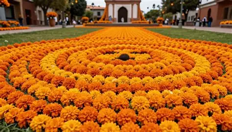

Memoria
Recordamos las historias y enseñanzas de nuestros seres queridos.
UNA TRADICIÓN QUE VIVE EN LA MEMORIA
Una celebración mexicana llena de color, historia, recuerdos y amor por quienes siempre vivirán en nuestros corazones.
DESCUBRIR LA TRADICIÓNCONOCE NUESTRAS RAÍCES
El Día de Muertos es una celebración tradicional mexicana dedicada a recordar y honrar a las personas que han fallecido. Durante estas fechas, las familias preparan ofrendas, colocan fotografías, decoran sus hogares y visitan los cementerios.
Esta festividad representa el vínculo entre la vida, la muerte y la memoria familiar. Sus colores, aromas, alimentos y ceremonias expresan el cariño que permanece hacia los seres queridos.
Generalmente, se celebra el 1 y 2 de noviembre. El día 1 se relaciona tradicionalmente con los niños fallecidos y el día 2 con los adultos, aunque las costumbres pueden variar.

Recordamos las historias y enseñanzas de nuestros seres queridos.
Conservamos tradiciones transmitidas de generación en generación.
Compartimos recuerdos, alimentos y momentos especiales.
UN ALTAR LLENO DE RECUERDOS
La ofrenda es un altar preparado para honrar a los difuntos. Cada elemento tiene un significado simbólico y representa una forma de recordar a quienes ya no están físicamente.
Simbolizan la luz que guía y acompaña a las almas.
Representa la pureza y ayuda a saciar la sed según la tradición.
Se relaciona simbólicamente con la purificación.
Permiten recordar a las personas a quienes está dedicada la ofrenda.
Su color y aroma se asocian con el camino hacia la ofrenda.
Decora el altar y representa simbólicamente el viento.
Es uno de los alimentos más representativos de la celebración.
Representan la muerte mediante figuras artísticas y coloridas.
Su humo aromático se relaciona con la purificación espiritual.
Algunas ofrendas tienen dos, tres o siete niveles, dependiendo de las costumbres de cada familia o región. Su estructura puede representar diferentes ideas espirituales y simbólicas.
COLORES, AROMAS Y SABORES
Las flores, los alimentos y las decoraciones forman parte de la identidad cultural mexicana. Cada región conserva sus propias recetas y maneras de celebrar.

Su intenso color naranja es uno de los símbolos más reconocidos del Día de Muertos. Se utiliza para decorar altares, tumbas y caminos de pétalos.
.webp)
Es un pan dulce decorado con figuras de masa que recuerdan huesos. Existen diferentes formas y recetas según la región.

Tamales, mole, frutas, calabaza en dulce, chocolate y atole pueden formar parte de las ofrendas familiares.
Las calaveritas de azúcar, el incienso, las bebidas tradicionales y los objetos personales completan muchas ofrendas. Su presencia depende de las costumbres y los recuerdos de cada familia.
UN LEGADO DE GENERACIONES
El Día de Muertos actual es resultado de un largo proceso histórico en el que se relacionaron tradiciones indígenas y celebraciones cristianas. No es una práctica que haya permanecido sin cambios a través de los siglos.
Diversos pueblos mesoamericanos tenían ceremonias y creencias relacionadas con la muerte y el destino de los difuntos. Para los mexicas, el Mictlán era uno de los lugares relacionados con el mundo de los muertos.
Con la llegada de los españoles se extendieron las celebraciones católicas de Todos los Santos y de los Fieles Difuntos, que se relacionaron con prácticas locales.
Las comunidades desarrollaron distintas formas de elaborar ofrendas, visitar cementerios y transmitir sus costumbres.
La tradición se mantiene en hogares y comunidades, además de escuelas, museos, exposiciones y actividades culturales.
En 2003, la UNESCO proclamó esta festividad como Obra Maestra del Patrimonio Oral e Inmaterial de la Humanidad. En 2008 fue incorporada a la Lista Representativa del Patrimonio Cultural Inmaterial de la Humanidad.
ARTE, HUMOR Y TRADICIÓN
Son composiciones breves, generalmente escritas en verso, que utilizan humor e ironía para hablar de la muerte. En ocasiones imaginan que la Calaca visita a una persona y la lleva a una situación inesperada.
La Catrina llegó a la escuela,
buscando al que no estudió,
vio tantos libros y tareas,
¡y hasta ella se asustó!
Se llevó su cuaderno,
dispuesta a investigar,
pero al ver tantos ejercicios,
¡prefirió mejor descansar!

La Catrina es una figura emblemática del arte mexicano. Su antecedente más conocido es La Calavera Garbancera, grabado creado por José Guadalupe Posada a principios del siglo XX.
Diego Rivera contribuyó a popularizarla al representarla en su mural Sueño de una tarde dominical en la Alameda Central. Su imagen se relaciona con la crítica social y se convirtió en un símbolo de la cultura mexicana.
UN MÉXICO LLENO DE CULTURA
En comunidades de la región del lago de Pátzcuaro, algunas familias realizan ceremonias nocturnas en los cementerios, con velas y flores.
En Huaquechula destacan las ofrendas monumentales, con estructuras altas, telas blancas y numerosos elementos decorativos.
En Pomuch se conserva la tradición de limpiar cuidadosamente los restos óseos de los familiares fallecidos y renovar sus telas bordadas.
En distintas comunidades se elaboran altares, se preparan alimentos tradicionales y se realizan visitas a los panteones.
DOS CELEBRACIONES DIFERENTES
| Característica | Día de Muertos | Halloween |
|---|---|---|
| Fecha principal | 1 y 2 de noviembre | 31 de octubre |
| Actividades | Ofrendas y recuerdo familiar | Disfraces y dulces |
| Símbolos | Cempasúchil y calaveritas | Calabazas y fantasmas |
| Propósito habitual | Honrar a los difuntos | Celebración recreativa |
Aunque ambas festividades ocurren en fechas cercanas, tienen historias y significados culturales distintos.
DATOS INTERESANTES
Cada familia puede crear un altar diferente según sus creencias y recuerdos.
El pan de muerto presenta diferentes formas y recetas en varias regiones.
La Catrina se popularizó mediante el grabado y la pintura.
La UNESCO reconoce la importancia cultural de esta festividad.
UNA TRADICIÓN QUE NOS UNE
El Día de Muertos conserva la memoria familiar, fortalece la identidad cultural y permite transmitir conocimientos ent